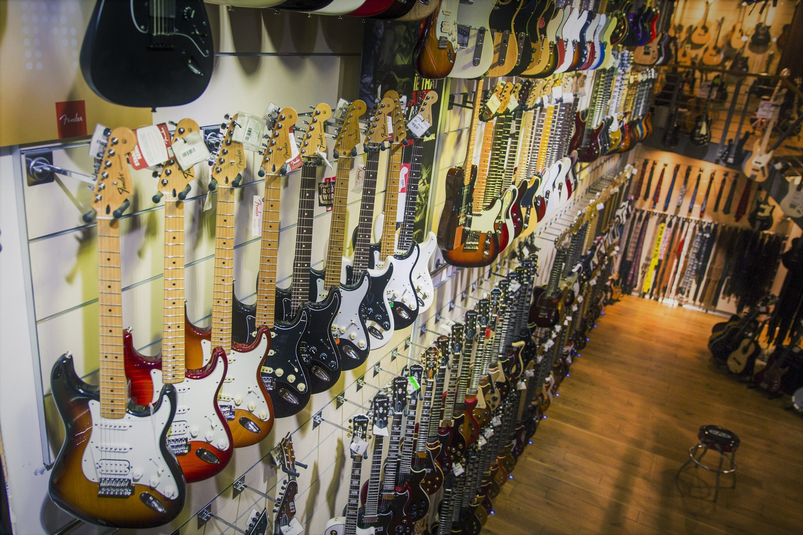
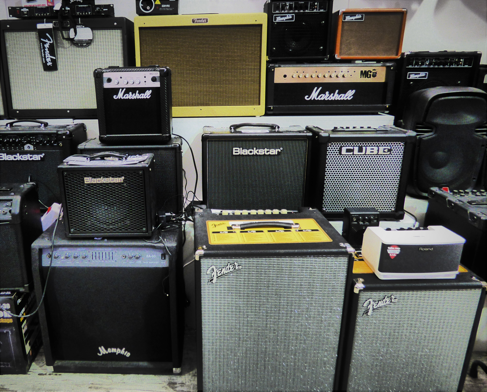

¿Quiénes somos?
La Séptima Cuerda abrió sus puertas en 2000 con el respaldo de una fiel clientera.
20 años en el sector avalan la calidad de nuestros instrumentos, asegurando siempre un excelente
trato al cliente.
Durante la pandemia muchos otros negocios tuvieron cerrar permanentemente, sin embargo
en ese momento nos dimos cuenta de que había aumentado considerablemente
el número de peronas que buscaban aprovechar el tiempo libre en casa aprendiendo a tocar la
guitarra eléctrica, por lo que decidimos habilitar la venta online.
¿Por qué la guitarra eléctrica?
La demanda de este instrumentos durante el confinamiento tiene mucho más sentido del que aparenta a
primera vista.
Para empezar, la guitarra eléctrica es un instrumento perfecto para aprender a tocar sin
salir de casa ni molestar a sus vecinos: símplemente
conectándola a un amplificador mediante un cable especial jack y usando unos cascos nadie notará que
está ensayando para ser el próximo Jimi Hendrix.
Venta de guitarras
En la web disponemos una amplia gama de guitarras, de diferentes modelos, marcas y precios. Los
gastos de envío son gratuitos para toda la Península y ofrecemos una garantía
de 24 meses.
También vendemos amplificadores, pedales, juegos de púas cables y demás accesorios.
Encuentrános en la Calle Río Odiel 22 en Móstoles, disponemos de parking para
clientes.
 